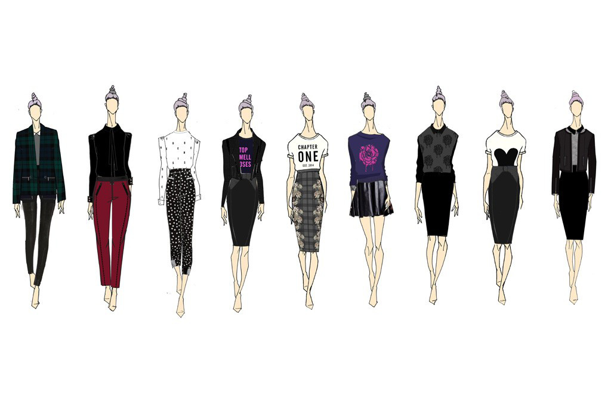

| The Procedure | ||||
|---|---|---|---|---|
| The First Step | The Second Step | The Third Step | The Fourth Step | The Fifth Step |
Making a website can be pretty tedious and overwhelming. In this website you will learn how to make an effective clothing line step by step!
Note: This is a very brief and under-complicated guide, this will give you the most basic information you will need to know, not the entire story!
Enjoy Reading!
Ralph Lauren made the Wide Ties, Nigo created a full-zip shark hoodie, Diane von Furstenberg did it with the now-ubiquitous wrap dress, Tory Burch had her Reva flats! What's yours?
Start with a single piece of clothing that's different compared to your competition. Have a better design, different graphics, change of materials, anything that makes your comapny stand out!
You can find ideas here.
First thing first is to sketch what type of clothes you want to manufacture. After finding your unique niche of clothing (from the previous step) follow the trends and develop your design. Then you should focus on the graphics for your apparel, you don't have to be a master of Photoshop to get some nice graphics for your company. Learning Photoshop and Illustrator can be very time consuming so it should not be of the highest priority from the getko, however it is nice to develop basic skills in this area. More efficient ways of getting designs for your company is to pay professional graphic freelancers online. There are a lot of resources out there like Fiverr.com where you can get a good graphic designer to make a great design for you for as low as $5USD.
Before you do any legal funding you'll need to register your buisness. Explaining how to register your business would need a whole website to itself. Go here for an in depth explaination. Once your business is officially registered, you can start fund raising. Here are 6 options to help get you started!
| Funding Options | |
|---|---|
| Options | Explanation |
| Friends and Family | By far the easiest method of fund raising with the highest success rate. Simply ask your friends and faimly for start-up capital, if they're in a secure financial situation and they see you as a future successful entrepreneur, chances are they will help fund your business. Make sure not to bring emotion into the proposal and give them a way out in case they don't want to help. Try and re-pay your friends and family in time and show them lots of thanks either way! |
| Private Lenders | Through private lenders, founders can gain access to funds without any involvement from the government. It is the most convenient way for most businesses to begin operations. Just make sure you are capable of paying the lenders back, if you believe in your company and have a strong business plan, that shouldn't be a problem! |
| Angel and Seed Investors | Your best option if you're looking to raise LOTS of money. Your angel or seed investor is your go-to advisor whom you may compensate with equity or pay in royalties in the company. Their networks are always as rich as their net-worth, so take advantage of it. Angel investors can be found at websites such as Angel.co. |
| Credit Cards | Many business advisors dislike this option. It's more of a short term PERSONAL investment. This puts you in lots of PERSONAL debt and puts your own PERSONAL financial situation in a bad place. Stay away from using your own credit cards unless you 100% have to. |
| Crowdfunding Websites | Choose Kickstarter, Indigogo or Gofundme. Crowdfunding is a great way for startups to reach out to a large audience in their niche. You pitch an idea on these website and offer special rewards. In return, not only do you raise a ton of money and create a community around your product, but you acquire your first users to test, utilize, and help innovate what you are working toward. |
| Bootstrapping | "Bootstrapping" is essentially starting a company with little to no capital, having the rely on money outside of investments. Someone is defined to be bootstrapping by supporting their comapny with their own personal savings or using the incoming revenue from the business. |
Now that your business is registered and you have a little bit of purchasing power, it's time to source the products. Again you have a few options here.
Open a brick-and-mortar store or an e-commerce site. Or join the ranks of established players and set up shop on Etsy. I would suggest opening an e-commerce site or other online selling alternatives first to see if there's a market for your product before launching a real-life store or boutique.
Social Media is a super-effective free marketing strategy to help get the word out about your company on a platform with millions of users and potential buyers. It's allows for lots of employee to customer interaction and transparency within the company. With built in tools, it's a great way to view your customer demographics and encourages active communication. You can sporsor big Social-Media influencers to drive traffic towards your business and post updates and pictures on your hottest new released clothes. With the right plan in place, social media can help make your clothing line be a long-term reality.